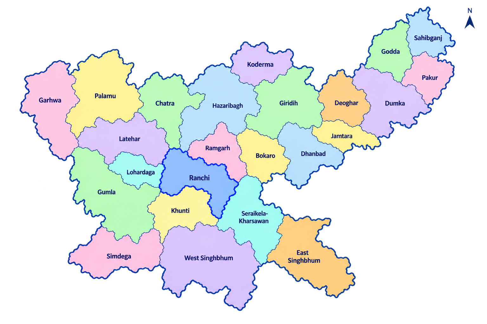

Report a problem in your area. Help government understand it. Connect with universities and industries to build real solutions for all 24 Jharkhand districts.

Across Jharkhand, citizens face local challenges every day in water, healthcare, education, and infrastructure. SamadhanSetu bridges the gap between grassroots problem identification and structured academic-industry solution delivery.
Standard complaint portals register issues but lack the research, technical expertise, and commercial partnerships required to solve complex societal problems. SamadhanSetu transforms citizen reports into research challenges for universities and implementation opportunities for industry.
A transparent, 9-step lifecycle taking community needs from grassroots submission to field deployment.
Empowering citizens, government officials, academic researchers, and industry leaders to collaborate on a single unified platform.
Report real problems from your village, ward, or city and track real-time progress as solutions are built.
Review AI-prioritized challenges, validate public needs across all 24 districts, and monitor solution deployment.
Turn societal challenges into faculty research projects, student capstones, and innovative prototypes.
Provide technology mentorship, CSR funding, pilot testing, and pathways to commercialize scalable solutions.
Every submission is tracked transparently from initial entry through AI triage, government validation, and university matching.
Powered by Groq LLM intelligence, SamadhanSetu assists government officers by automatically classifying problem domains, detecting duplicate entries, and recommending expert academic partners.
Bridging academic research labs with corporate technology & CSR funding to ensure field-tested solutions reach community adoption.
Explore problem domains crowdsourced from citizens across Jharkhand's 24 administrative districts.
Water quality monitoring, safe drinking water access, and rural sanitation infrastructure.
Telemedicine, maternal care tracking, and medical supply chain optimization.
Digital classroom tools, vocational training, and STEM learning access.
Soil health sensors, crop disease detection, and direct farmer market linkages.
Afforestation monitoring, wildlife protection, and solid waste management.
Solar microgrids, biomass energy, and rural electrification monitoring.
Tribal handicraft promotion, SHG digital empowerment, and local employment.
Assistive tech devices, barrier-free infrastructure, and inclusive digital tools.
Smart traffic management, street lighting, and drainage maintenance.
Transparent welfare distribution, digital certificates, and grievance resolution.
Early flood warnings, drought resilience, and emergency response coordination.
Last-mile rural transit, road safety monitoring, and EV charging readiness.
Walk through an example lifecycle of a water quality challenge reported in a rural panchayat.
Designed specifically for Jharkhand's governance and innovation ecosystem.